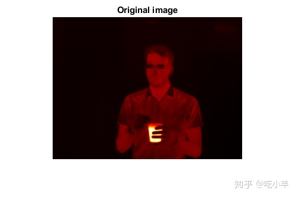
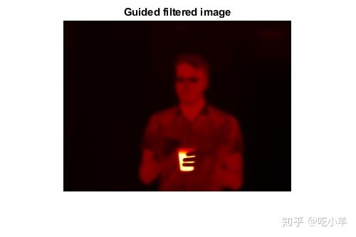
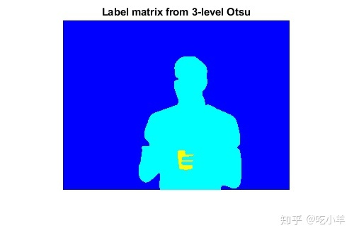
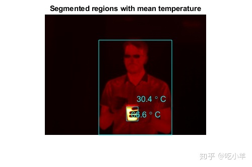

Home
此示例显示了如何使用热图像，演示了简单的分割。从热像仪获得热图像，热像仪检测电磁光谱的红外范围内的辐射。热像图捕获所有绝对零以上的物体发出的红外辐射。
将热图像读取到工作空间中，并用于whos了解有关图像数据的更多信息。
I = imread('hotcoffee.tif');
whos I
Name Size Bytes Class Attributes
I 240x320 307200 single
计算数据所占据的动态范围，以查看图像所占据的温度范围。该图像中的像素值对应于摄氏温度的实际温度。
range = [min(I(:)) max(I(:))]
range = 1x2 single row vector
22.4729 77.3727
显示热图像。由于热图像是动态范围在0到1之外的单精度图像，因此必须使用imshow的自动缩放功能来显示图像。
figure
imshow(I,[])
colormap(gca,hot)
title('Original image')

对图像进行保留边缘的平滑处理以消除噪点，同时仍保留图像细节。这是分割之前的预处理步骤。使用imguidedfilter函数可在自引导下进行平滑处理。'DegreeOfSmoothing'参数控制平滑量，并且取决于图像的范围。调整'DegreeOfSmoothing'以适应热成像图像的范围。显示过滤后的图像。
smoothValue = 0.01*diff(range).^2;
J = imguidedfilter(I,'DegreeOfSmoothing',smoothValue);
figure
imshow(J,[])
colormap(gca,hot)
title('Guided filtered image')

确定用于细分的阈值。图像具有3个不同的区域-人，热的物体和背景-在强度（温度）上似乎很好地分开了。使用multithresh来计算图像的2级阈值。使用Otsu方法将图像分成3个区域。
thresh = multithresh(J,2)
thresh = 1x2 single row vector
27.0018 47.8220
使用multithresh返回的值对图像进行阈值处理。阈值为27和48摄氏度。第一阈值将背景强度与人分开，第二阈值将人与热物体分开。分割图像并填充孔。
L = imquantize(J,thresh);
L = imfill(L);
figure
imshow(label2rgb(L))
title('Label matrix from 3-level Otsu')

在图像中的前景区域周围绘制一个边界框，并将该区域的平均温度值放入该框中。该示例假定最大的区域是背景。使用regionprops函数获取有关分割图像中区域的信息。
props = regionprops(L,I,{'Area','BoundingBox','MeanIntensity','Centroid'});
% Find the index of the background region.
[~,idx] = max([props.Area]);
figure
imshow(I,[])
colormap(gca,hot)
title('Segmented regions with mean temperature')
for n = 1:numel(props)
% If the region is not background
if n ~= idx
% Draw bounding box around region
rectangle('Position',props(n).BoundingBox,'EdgeColor','c')
% Draw text displaying mean temperature in Celsius
T = [num2str(props(n).MeanIntensity,3) ' \circ C'];
text(props(n).Centroid(1),props(n).Centroid(2),T,...
'Color','c','FontSize',12)
end
end

======================================================================
我的测试结果及程序
下面是我测试的代码：

注：本文根据MATLAB官网内容修改而成。